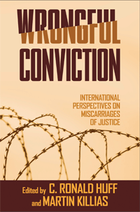

A cross-national study that shows how various criminal justice systems are susceptible to wrongful convictions
A cross-national study that shows how various criminal justice systems are susceptible to wrongful convictions


 A cross-national study that shows how various criminal justice systems are susceptible to wrongful convictions
A cross-national study that shows how various criminal justice systems are susceptible to wrongful convictions

|  |
Wrongful ConvictionInternational Perspectives on Miscarriages of Justiceedited by C. Ronald Huff and Martin Killiaspaper EAN: 978-1-59213-646-9 (ISBN: 1-59213-646-X) |
"An important step in showing that even the best criminal justice systems occasionally convict the innocent. Huff and Killias, two of the world�s most accomplished criminologists, have given us a collection of essays that are both first-rate and truly sobering"
—Michael L. Radelet, University of Colorado, and author of In Spite of Innocence
Imperfections in the criminal justice system have long intrigued the general public and worried scholars and legal practitioners. In Wrongful Conviction, criminologists C. Ronald Huff and Martin Killias present an important collection of essays that analyzes cases of injustice across an array of legal systems, with contributors from North America, Europe and Israel.
Using this cross-national perspective, the volume offers detailed discussions of specific legal systems while also considering issues that transcend national boundaries. Differences in court procedures are explained as contributors ask what role the respective criminal justice systems play in preventing or generating wrongful convictions. Most importantly, this collection includes a number of well-developed public-policy recommendations intended to reduce the instances of courts punishing innocents. It also offers suggestions for compensating more fairly those who are wrongfully convicted.
Excerpt available at www.temple.edu/tempress
"A real contribution to the existing literature."
—Lawrence Marshall, Stanford University Law School and co-founder of the Northwestern Center on Wrongful Convictions
"A fascinating and important study."
—Paul Martin, University of Oxford
"[W]rongful convictions are not solely an American issue, and the editors of this timely volume provide a cogent, as well as compelling, collection of articles that establishes international dimensions of this stain on the credibility of criminal justice practices."
—Corrections Managers' Report
"Wrongful Conviction provides interesting statistics and analysis of various criminal systems throughout North America, Europe and Israel.... it will give you an interesting perspective...and perhaps give you solace in the fact that the United States is not the only country with an imperfect and often fallible criminal system."
—New York Law Journal
"Dedicated to the victims of wrongful convictions worldwide, the book is a must read for all persons involved in prosecutions, as well as judges, legal practitioners, medical and forensic examiners, and those interested in the protection of human rights."
—Choice
"[A] major study....A key question raised by this book is the extent to which different legal systems are more or less effective in preventing (and where necessary, correcting) convictions of the factually innocent. This is a surpassingly difficult project, and the editors and authors of Wrongful Conviction are to be commended for taking it on....This volume makes an important contribution to the growing field of comparative criminal justice, and it can only be hoped that these and other authors will follow this research with further efforts to integrate knowledge of the phenomenon of wrongful convictions around the world."
—The Law and Politics Book Review
"Huff and Killias provide a thorough comparison of the adversarial and inquisitorial models of criminal justice administration. Ultimately, they conclude both are subject to the forces that lead to wrongful convictions."
—International Criminal Justice Review
"This book is an important contribution to the debate around wrongful convictions and miscarriages of justice�. Its international perspective places it uniquely in the field and all the chapters are well written and sufficiently detailed to provide a basis for comparing and contrasting these different systems."
—International Sociology Review of Books
Part I: Cross-National Perspectives and Issues
1. Introduction • C. Ronald Huff and Martin Killias
2. Wrongful Conviction and Moral Panic: National and International Prespectives on Organized Child Sexual Abuse • Randall Grometstein
3. Judicial Error and Forensic Science: Pondering the Contribution of DNA Evidence • Beatrice Schiffer and Christophe Champod
Part II: North American Perspectives and Issues
4. Wrongful Convictions in the United States • C. Ronald Huff
5. The Adversary System and Wrongful Conviction • Marvin Zalman
6. Fatal Errors: Compelling Claims of Executions of the Innocent in the Post-Furman Era • William S. Lofquist and Talia R. Harmon
7. The Fallibility of Justice in Canada: A Critical Examination of Conviction Review • Kathryn M. Campbell
Part III: European and Israeli Perspectives and Issues
8. Wrongful Convictions in Switzerland: The Experience of a Continental Law Country • Martin Killias
9. The Vulnerability of Dutch Criminal Procedure to Wrongful Conviction • Chrisje Brants
10. Criminal Justice and Miscarriages of Justice in England and Wales • Clive Walker and Carole McCartne
11. A Comparative Analysis of Prosecution in Germany and the United Kingdom: Searching for Truth or Getting a Conviction? • Isabel Kessler
12. Wrongful Conviction in France: The Limits of "Pourvoi en Revision" • Nathalie Dongois
13. The Sanctity of Criminal Law: Thoughts and Reflections on Wrongful Conviction in Israel • Arye Rattner
14. Wrongful Convictions in Poland: From the Communist Ero to the Rechtstaat Experience • Emil Plywaczewski, Adam Gorski, and Andrzej Sakowicz
Part IV: Conclusions
15. Wrongful Convictions: Conclusions from an International Overview • C. Ronald Huff and Martin Killias
Contributors
Index
 | C. Ronald Huff is Professor of Criminology, Law and Society as well as Sociology at the University of California, Irvine, where he served as Dean of the School of Social Ecology from 1999-2009. He also served as Director of the John Glenn School of Public Affairs (1994-1999) and the Criminal Justice Research Center (1979-1999) at The Ohio State University. He is a Fellow and Past-President of the American Society of Criminology and the author of numerous scholarly articles and 12 books, including Convicted but Innocent: Wrongful Conviction and Public Policy. |
 | Martin Killias is Professor of Criminal Law and Criminology at the Universities of Zurich and Lausanne, and a former part-time Judge in the Federal Supreme Court of Switzerland. He received the Sellin-Glueck Award of the American Society of Criminology in 2001. He has been the first President of the European Society of Criminology, co-founder of the International Crime Victim Surveys, and Chair of the European Sourcebook of Crime and Criminal Justice Statistics. |
Law and Criminology
Political Science and Public Policy
Sociology
© 2015 Temple University. All Rights Reserved. This page: http://www.temple.edu/tempress/titles/1911_reg.html.